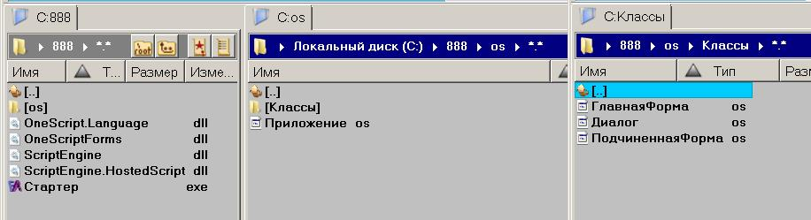
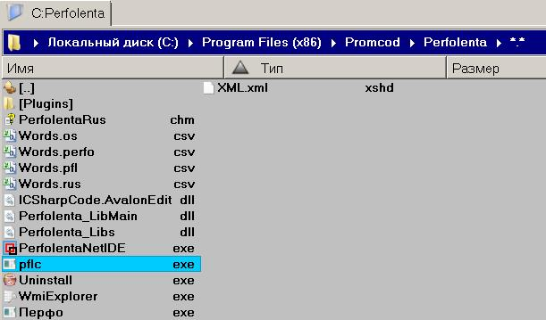
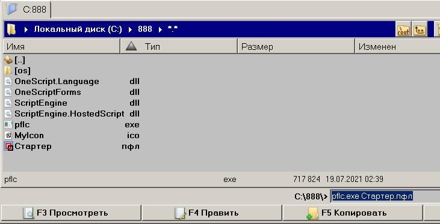
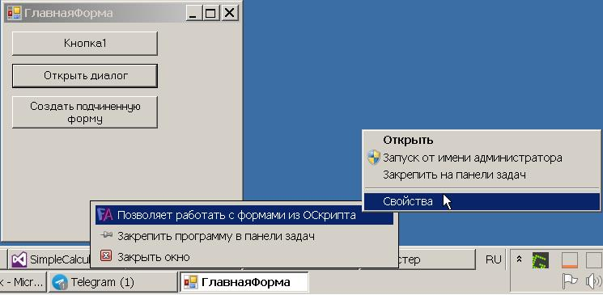

Рассмотрим пример того, как можно разместить файлы сценариев и библиотек при создании приложения на основе сценариев *.os, запускаемое исполняемым файлом, который имеет определенную иконку.
Вот так будет выглядеть в итоге структура каталога нашей программы.
Файлы сценариев будут располагаться в подкаталоге ..\os\. Файлы библиотек уровнем выше. Рядом с библиотеками разместим exe файл запуска приложения. Воспользуемся примером создания приложения с несколькими окнами, в том числе и диалоговым окном, взятым из справки форм:
ФормыДляОдноСкрипта.СоздатьФорму (OneScriptForms.CreateForm) МетодФайл Приложение.os - это стартовый сценарий.
На компьютере должен быть установлен OneScript. Он нужен для создания стартёра приложения Стартер.exe. У стартёра приложения имя можно будет сменить после его создания.
Нам так же понадобится файл pflc.exe. Он идет в комплекте со средой программирования Перфолента:
Язык программирования ПерфолентаЕсли вы её скачаете и установите, найдете и этот файл. pflc.exe будет создавать стартёр.
Стартёр не является скомпилированными в exe файлами сценария. Он является запускалкой, прячет от пользователя окно консоли, может быть снабжен иконкой и содержит заданные в качестве свойства приложения некоторые данные, например автора, версию и др.
Подготовьте каталог в таком виде:
Файлы библиотек Вы найдете в каталогах установленных программ OneScript и Перфолента. Подкорректируйте содержимое файла Стартер.пфл под Ваши требования.
Затем выполните команду (на рисунке выше пример с использованием тотал коммандера):
pflc.exe Стартер.пфл
Будет создан файл Стартер.exe.
Файлы pflc.exe, MyIcon.ico, Стартер.пфл можно после этого удалить.
Если всё прошло успешно свойства значка программы в панели задач будут выглядеть примерно так:

//==============================================================
//==============================================================
// Содержимое файла Стартер.пфл
#ТипСборки ОконноеПриложение
//тут можно задать информацию ЕХЕ файла
#ЗначокСборки "C:\888\MyIcon.ico"
#ВерсияСборки "1.0.0.0"
#НазваниеПродукта "Моё оконное приложение"
#ОписаниеПродукта "Позволяет работать с формами из ОСкрипта"
#ВерсияПродукта "1.0.0.0"
#Компания "ООО Рога и Копыта"
#АвторскоеПраво "Остап Бендер"
#ТорговаяМарка "Остап ТМ"
#ЗагрузитьСборку "ScriptEngine.HostedScript.dll"
ИмпортИмен System
ИмпортИмен ScriptEngine.Environment
ИмпортИмен ScriptEngine.HostedScript
ИмпортИмен ScriptEngine.HostedScript.Library
ИмпортИмен System.IO
&ВидноСборке
Программа ПодключениеОСкрипт
Процедура Старт
Путь="C:\888\os\Приложение.os"
СкриптМашина = Новый HostedScriptEngine();
//тут надо более интеллектуально поискать системный файл oscript.cfg
//или сделать свой...
Конфиг = Path.Combine("C:\Program Files (x86)\OneScript\bin", HostedScriptEngine.ConfigFileName);
СкриптМашина.CustomConfig = ?(File.Exists(Конфиг),Конфиг,Неопределено);
Исходник = СкриптМашина.Loader.FromFile(Путь);
пр = СкриптМашина.CreateProcess(Новый ХостКонсоль, Исходник)
пр.Start()
п=""
ВводСтроки п
КонецПроцедуры
КонецПрограммы
//консоли у нас в приложении не будет, но при необходимости можно сделать, чтобы весь вывод уходил в лог файл...
//
Класс ХостКонсоль Реализует IHostApplication
&ВидноВсем, Переопределение
Процедура Echo(str тип Строка, status тип MessageStatusEnum = MessageStatusEnum.Ordinary)
//System.Console.Write(str)
КонецПроцедуры
&ВидноВсем, Переопределение
Процедура ShowExceptionInfo(exc тип Exception)
//System.Console.WriteLine("Ошибка: "+exc.Message)
КонецПроцедуры
&ВидноВсем, Переопределение
Функция InputString(Ссыл result тип Строка, prompt тип Строка, maxLen тип Целое, multiline тип Булево) тип Булево
//result = System.Console.ReadLine
Возврат Истина
КонецФункции
&ВидноВсем, Переопределение
Функция GetCommandLineArguments() тип Строка[]
Возврат System.Environment.GetCommandLineArgs()
КонецФункции
КонецКласса
//==============================================================
//==============================================================
// Содержимое файла Приложение.os
#Использовать ".\"
// ПодключитьВнешнююКомпоненту("OneScriptForms.dll"); // Если прописать так, то библиотека форм должна лежать рядом со стартовым сценарием.
Стартовый = Новый Файл(СтартовыйСценарий().Источник).Путь;
ПутьБиблиотекиФорм = Лев(Стартовый, СтрДлина(Стартовый) - 3) + "OneScriptForms.dll";
ПодключитьВнешнююКомпоненту(ПутьБиблиотекиФорм); // Пусть в нашем случае библиотека форм лежит на один каталог выше стартового сценария.
Ф = Новый ФормыДляОдноСкрипта();
ГлавнаяФорма1 = Ф.СоздатьФорму(Новый ГлавнаяФорма());
ГлавнаяФорма1.Показать();
ГлавнаяФорма1.Активизировать();
// Запуск обработки событий из главного скрипта.
Ф.ЗапуститьОбработкуСобытий();
//==============================================================
//==============================================================
// Содержимое файла ГлавнаяФорма.os
Перем ЭтаФорма;
Перем ВремяСоздания;
Перем Ф;
Перем ПолеСписка1;
Перем ПодчиненнаяФорма;
Процедура ПриСозданииФормы(Форма) Экспорт
ЭтаФорма = Форма;
ЭтаФорма.Текст = "ГлавнаяФорма";
ЭтаФорма.Отображать = Истина;
Кнопка1 = Ф.Кнопка();
Кнопка1.Родитель = ЭтаФорма;
Кнопка1.Текст = "Кнопка1";
Кнопка1.Границы = Ф.Прямоугольник(10, 10, 180, 30);
Кнопка1.Нажатие = Ф.Действие(ЭтотОбъект, "Кнопка1_Нажатие");
Кнопка2 = Ф.Кнопка();
Кнопка2.Родитель = ЭтаФорма;
Кнопка2.Текст = "Открыть диалог";
Кнопка2.Лево = Кнопка1.Лево;
Кнопка2.Ширина = Кнопка1.Ширина;
Кнопка2.Высота = Кнопка1.Высота;
Кнопка2.Ниже(Кнопка1, 10);
Кнопка2.Нажатие = Ф.Действие(ЭтотОбъект, "Кнопка2_Нажатие");
Кнопка3 = Ф.Кнопка();
Кнопка3.Родитель = ЭтаФорма;
Кнопка3.Текст = "Создать подчиненную форму";
Кнопка3.Лево = Кнопка1.Лево;
Кнопка3.Ширина = Кнопка1.Ширина;
Кнопка3.Высота = Кнопка1.Высота + 10;
Кнопка3.Ниже(Кнопка2, 10);
Кнопка3.Нажатие = Ф.Действие(ЭтотОбъект, "Кнопка3_Нажатие");
КонецПроцедуры
Процедура Кнопка1_Нажатие() Экспорт
Ф.ОкноСообщений().Показать("Кнопка1_Нажатие " + ВремяСоздания, "Кнопка1_Нажатие", Ф.КнопкиОкнаСообщений.ОКОтмена, Ф.ЗначокОкнаСообщений.Восклицание);
КонецПроцедуры
Процедура Кнопка2_Нажатие() Экспорт
Сценарий1 = Новый Диалог();
Диалог = Ф.СоздатьФорму(Сценарий1);
ЗначениеВозврата = Диалог.ПоказатьДиалог();
Ф.ОкноСообщений().Показать("Значение возврата диалога: " + Диалог.Сценарий.ДанныеРаботыДиалога, "Значение возврата диалога", Ф.КнопкиОкнаСообщений.ОКОтмена, Ф.ЗначокОкнаСообщений.Восклицание);
КонецПроцедуры
Процедура Кнопка3_Нажатие() Экспорт
ПодчиненнаяФорма = Ф.СоздатьФорму(Новый ПодчиненнаяФорма());
ПодчиненнаяФорма.Показать();
КонецПроцедуры
Ф = Новый ФормыДляОдноСкрипта();
ВремяСоздания = ТекущаяУниверсальнаяДатаВМиллисекундах();
//==============================================================
//==============================================================
// Содержимое файла Диалог.os
Перем ВремяСоздания;
Перем Ф;
Перем ЭтаФорма;
Перем ПолеСписка1;
Перем ДанныеРаботыДиалога Экспорт;
Перем Стр;
Процедура ПриСозданииФормы(Форма) Экспорт
ЭтаФорма = Форма;
ЭтаФорма.Текст = "Диалог " + ВремяСоздания;
ЭтаФорма.Ширина = 450;
ЭтаФорма.Высота = 250;
ПолеСписка1 = Ф.ПолеСписка();
ПолеСписка1.Родитель = ЭтаФорма;
ПолеСписка1.Границы = Ф.Прямоугольник(10, 10, 300, 150);
ПолеСписка1.РежимВыбора = Ф.РежимВыбора.МножественныйПростой;
ПолеСпискаЭлементы1 = ПолеСписка1.Элементы;
ПолеСпискаЭлементы1.Добавить(Ф.ЭлементСписка("Строка55", "СтрЗначение"));
ПолеСпискаЭлементы1.Добавить(Ф.ЭлементСписка("Дата", (Дата(2019,01,02,03))));
ПолеСпискаЭлементы1.Добавить(Ф.ЭлементСписка("Булево", Ложь));
ПолеСпискаЭлементы1.Добавить(Ф.ЭлементСписка("Число", 156.54888));
ПолеСпискаЭлементы1.Добавить(Ф.ЭлементСписка("Объект", ЭтаФорма));
ПолеСпискаЭлементы1.Добавить(Ф.ЭлементСписка("Массив", Новый Массив()));
ПолеСписка1.УстановитьВыбор(0, Ложь);
ПолеСписка1.УстановитьВыбор(1, Истина);
ПолеСписка1.УстановитьВыбор(2, Ложь);
ПолеСписка1.УстановитьВыбор(3, Истина);
ПолеСписка1.УстановитьВыбор(4, Ложь);
Кнопка1 = ЭтаФорма.ЭлементыУправления.Добавить(Ф.Кнопка());
Кнопка1.Текст = "Выбранные";
Кнопка1.Ширина = 100;
Кнопка1.Правее(ПолеСписка1, 10);
Кнопка1.Нажатие = Ф.Действие(ЭтотОбъект, "Кнопка1_Нажатие");
// Если установить Истина, то эта команда не позволит открыть диалог в модальном режиме.
ЭтаФорма.Отображать = Ложь;
КнопкаОК = Ф.Кнопка();
КнопкаОК.Родитель = ЭтаФорма;
КнопкаОК.Текст = "ОК";
КнопкаОК.Лево = ПолеСписка1.Лево;
КнопкаОК.Ширина = 80;
КнопкаОК.Высота = 25;
КнопкаОК.Ниже(ПолеСписка1, 10);
КнопкаОК.Нажатие = Ф.Действие(ЭтотОбъект, "КнопкаОК_Нажатие");
КнопкаОтмена = Ф.Кнопка();
КнопкаОтмена.Родитель = ЭтаФорма;
КнопкаОтмена.Текст = "Отмена";
КнопкаОтмена.Ширина = КнопкаОК.Ширина;
КнопкаОтмена.Высота = КнопкаОК.Высота;
КнопкаОтмена.Ниже(ПолеСписка1, 10);
КнопкаОтмена.Правее(КнопкаОК, 10);
КнопкаОтмена.Нажатие = Ф.Действие(ЭтотОбъект, "КнопкаОтмена_Нажатие");
КонецПроцедуры
Процедура Кнопка1_Нажатие() Экспорт
ВыбранныеЭлементы1 = ПолеСписка1.ВыбранныеЭлементы;
Колич = ВыбранныеЭлементы1.Количество;
Если Колич > 0 Тогда
Стр = "Выбранные:" + Символы.ПС;
Для А = 0 По Колич - 1 Цикл
Эл = ВыбранныеЭлементы1.Элемент(А).Значение;
Стр = Стр + "- " + Эл + Символы.ПС;
КонецЦикла;
ОкноСообщений2 = Ф.ОкноСообщений();
ОкноСообщений2.Заголовок = "Выбранные";
ОкноСообщений2.Текст = Стр;
ОкноСообщений2.Показать();
КонецЕсли;
КонецПроцедуры
Процедура КнопкаОК_Нажатие() Экспорт
ДанныеРаботыДиалога = "ПРИНЯТО!";
ЭтаФорма.РезультатДиалога = Ф.РезультатДиалога.Да; // После установки результата диалога форма диалога закроется.
КонецПроцедуры
Процедура КнопкаОтмена_Нажатие() Экспорт
ДанныеРаботыДиалога = "ОТКЛОНЕНО!";
ЭтаФорма.РезультатДиалога = Ф.РезультатДиалога.Нет; // После установки результата диалога форма диалога закроется.
КонецПроцедуры
Ф = Новый ФормыДляОдноСкрипта();
ВремяСоздания = ТекущаяУниверсальнаяДатаВМиллисекундах();
ДанныеРаботыДиалога = "Форма закрыта без выбора";
Стр = "";
//==============================================================
//==============================================================
// Содержимое файла ПодчиненнаяФорма.os
Перем ВремяСоздания;
Перем Ф;
Процедура ПриСозданииФормы(Форма) Экспорт
ЭтаФорма = Форма;
ЭтаФорма.Текст = "Подчиненная форма " + ВремяСоздания;
ЭтаФорма.Ширина = 450;
ЭтаФорма.Высота = 250;
ЭтаФорма.Отображать = Истина;
Кнопка = Ф.Кнопка();
Кнопка.Родитель = ЭтаФорма;
Кнопка.Текст = "Кнопка";
Кнопка.Границы = Ф.Прямоугольник(10, 10, 180, 30);
Кнопка.Нажатие = Ф.Действие(ЭтотОбъект, "Кнопка_Нажатие");
ЭтаФорма.Нажатие = Ф.Действие(ЭтотОбъект, "Нажатие");
КонецПроцедуры
Процедура Нажатие() Экспорт
Ф.ОкноСообщений().Показать("ПодчиненнаяФорма_Нажатие " + ВремяСоздания, "ПодчиненнаяФорма_Нажатие", Ф.КнопкиОкнаСообщений.ОКОтмена, Ф.ЗначокОкнаСообщений.Восклицание);
КонецПроцедуры
Процедура Кнопка_Нажатие() Экспорт
Ф.ОкноСообщений().Показать("Кнопка_Нажатие " + ВремяСоздания, "Кнопка1_Нажатие", Ф.КнопкиОкнаСообщений.ОКОтмена, Ф.ЗначокОкнаСообщений.Восклицание);
КонецПроцедуры
Ф = Новый ФормыДляОдноСкрипта();
ВремяСоздания = ТекущаяУниверсальнаяДатаВМиллисекундах();